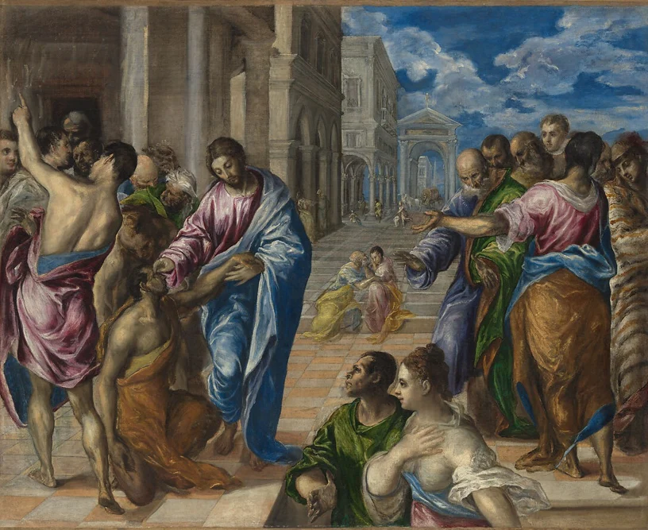
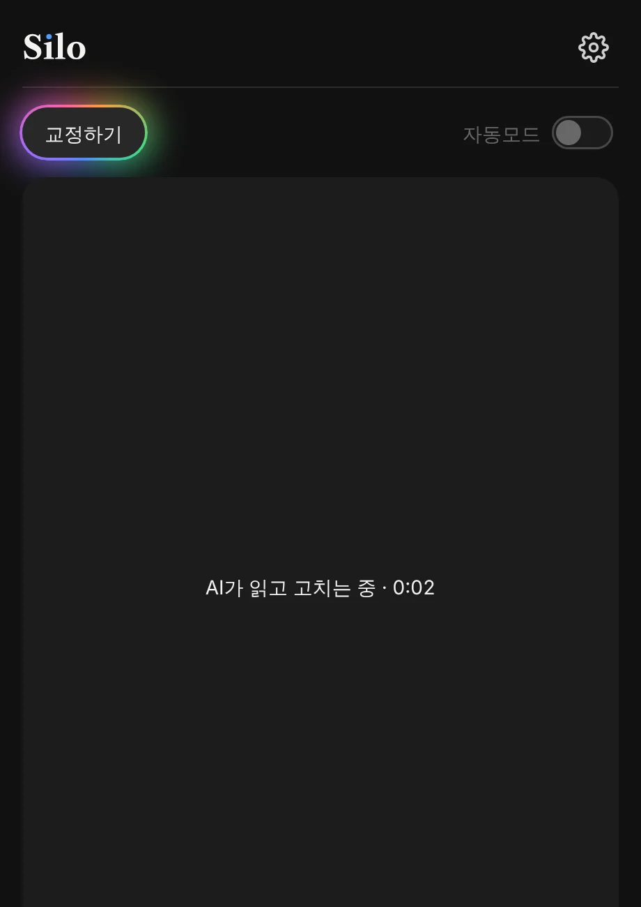

원본이 기준. OCR이 잘못 읽은 글자 하나까지, 책 사진을 보며 다시 쓰는 교정.
원본 이미지
Silo가 다시 쓴 글 고친 곳 0
[그림] <눈먼 사람을 고치심 Christ Healing the Blind>〈눈먼 사람을 고치심(Christ Healing the Blind)〉
요한복음 9장의 이야기를 그린 그림으로, … 이 남자는 곧 실로앙실로암 못으로 가서 씻고 앞을 보게 된다. … 엘 그레코(EIEl Greco)의 1570년 무렵 작품.
[그림 끝]
@@(실로암, 보냄을 받은 물
실로암은 예루살렘 성 남쪽에 있던 못이다. 기흔기혼 샘의 물은 바위를 뚫어 만든 굴 --― 길이가 500m를 넘는다 --― 을 따라 이 못까지 흘러왔다. 요한복음은 이 이름을 '보냄을 받았다'‘보냄을 받았다’는 뜻이라고 풀이한다.
태어날 때부터 앞을 보지 못하던 사람은 … 실로앙실로암 못으로 가서 씻었고, 돌아올 때는 앞을 보았다.

직접 보면 더 분명하게. 마이픽 편집 화면에서 Silo가 한 쪽을 교정하는 실제 모습.

영상 재생
1
2
3
실제 Silo 화면. 예시 그림은 엘 그레코, 〈눈먼 사람을 고치심〉, 1570년 무렵, 메트로폴리탄 미술관.
한 쪽이 끝나면. 사람이 손대야 할 곳만 또렷하게 남겨 둔 결과.
- 1
제목은 목차대로. 교정을 시작하기 전에 책 목차부터 읽고, 대제목·중제목·소제목 단계를 그대로 맞추는 것.
- 2
그림은 제자리에. 원본에서 사진과 그림을 잘라 내 @@i 자리에 넣는 일까지 한 번에.
- 3
볼 곳만 색으로. 꼭 확인할 곳은 빨강, 참고할 곳은 노랑. 나머지는 믿고 넘어가도 되게.
800원
봉사 1시간 분량을 교정하는 데 드는 비용, 약 800원.
5분
쪽 넘김 간격을 가장 짧게 두었을 때, 봉사 1시간 분량을 끝내는 데 걸리는 시간.
자동모드로 마지막 쪽까지 막힘없이.
제출하기만큼은 언제나 사람의 손으로.